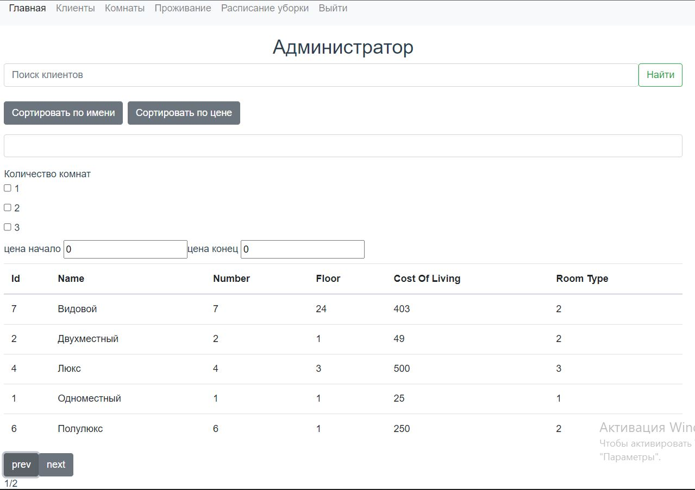
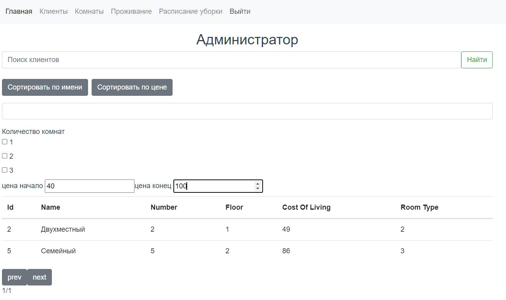
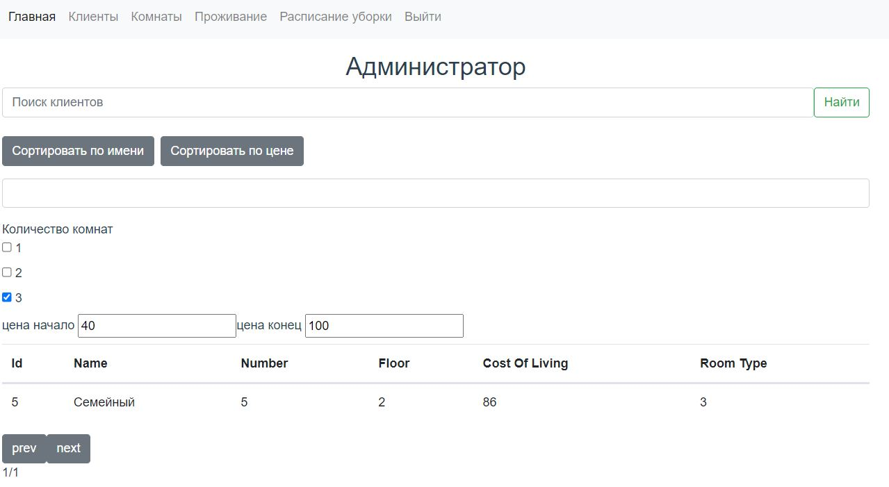
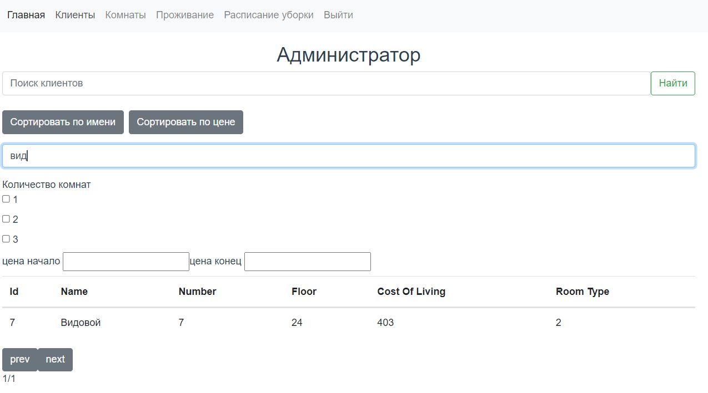
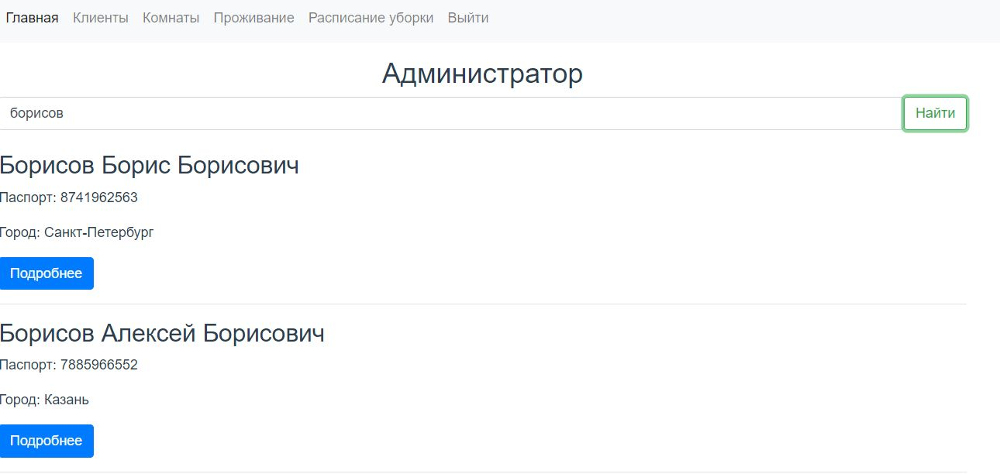

Задание 4.1.1
Необходимо реализовать интерфейс списков объектов, в котором подключить фильтры из второй лабораторной. В интерфейсе должен быть обеспечен следующий функционал:
- сортировка объектов.
- пагинация.
- поиск по объектам.
- фильтрация с чекбоксами.
- фитры на диапазон.
Можно сказать, необходимо реализовать страничку с фильтрами, как в интернет магазине и подключить к бэкенду.
Страничка с фильтрами:

Включена сортировка по цене, количество страниц тоже обновляется:

Включен фильтр на количество комнат в номере:

Реализован поиск по названию номера:

Реализован поиск по имени клиента:
